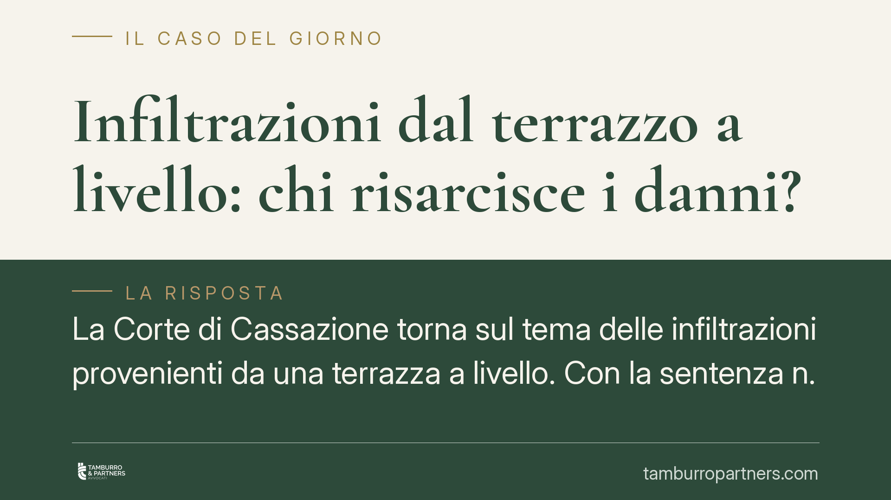

Infiltrazioni dal terrazzo a livello: chi risarcisce i danni?
La Corte di Cassazione torna sul tema delle infiltrazioni provenienti da una terrazza a livello. Con la sentenza n. 11585/2026 ribadisce un principio dalle ricadute pratiche rilevanti: verso il danneggiato rispondono in solido condominio, proprietario e inquilino, mentre le note quote di ripartizione dell'art. 1126 c.c. operano solo nei rapporti interni di regresso.

Il fatto
Un proprietario danneggiato da infiltrazioni provenienti da una terrazza a livello agisce per ottenere il risarcimento. La terrazza serve in parte da copertura all'edificio e in parte da terrazzo esclusivo di un appartamento, a sua volta locato a un conduttore. Da qui la domanda che ricorre di frequente nel contenzioso condominiale: a chi va chiesto il pagamento? Al condominio, al proprietario dell'unità servita dalla terrazza o all'inquilino che ne ha l'uso?
La Cassazione, con la sentenza n. 11585/2026, offre una risposta netta, distinguendo due piani che spesso vengono confusi.
Inquadramento normativo
La terrazza a livello è quella che si trova allo stesso piano di un appartamento e ne costituisce prolungamento, svolgendo però anche la funzione di copertura per le unità sottostanti. Questa doppia natura è la ragione delle difficoltà applicative.
Due sono le norme in gioco. L'art. 2051 cod. civ. disciplina la responsabilità per i danni cagionati dalle cose che si hanno in custodia: risponde chi ha il governo effettivo del bene, cioè il potere di controllo e di intervento. L'art. 2055 cod. civ. stabilisce che, quando il fatto dannoso è imputabile a più persone, tutte rispondono in solido: il danneggiato può pretendere l'intero da uno qualsiasi dei responsabili.
A parte sta l'art. 1126 cod. civ., che regola il riparto delle spese di manutenzione delle terrazze a livello di uso esclusivo: un terzo a carico di chi ne ha l'uso esclusivo, i restanti due terzi a carico dei condomini cui la terrazza fa da copertura, in proporzione ai millesimi.
Il principio della Cassazione
La Corte separa con chiarezza il rapporto "esterno" da quello "interno".
Nel rapporto esterno, cioè verso il terzo danneggiato, condominio, proprietario e conduttore sono tutti custodi della cosa da cui è derivato il danno, ciascuno per la porzione o la funzione su cui esercita un potere di controllo. Ne consegue la responsabilità solidale ex art. 2055 c.c.: il danneggiato può rivolgersi indistintamente a uno solo dei coobbligati per ottenere il risarcimento integrale.
Nel rapporto interno, invece, entra in gioco l'art. 1126 c.c. Le quote di un terzo e due terzi non servono a limitare la pretesa del danneggiato, ma a stabilire come i coobbligati debbano ripartirsi il peso definitivo del risarcimento tramite l'azione di regresso. Chi ha pagato l'intero può quindi recuperare dagli altri la parte che compete a ciascuno.
Implicazioni pratiche
Per il proprietario danneggiato la pronuncia è favorevole: non deve individuare in anticipo il singolo responsabile né frazionare la domanda. Può agire per l'intero verso il soggetto più solvibile o più facilmente aggredibile, tipicamente il condominio.
Per il condominio e per l'amministratore il messaggio è di segno opposto: non basta invocare le quote dell'art. 1126 c.c. per ridurre l'esposizione verso il terzo. Il condominio può essere condannato al pagamento integrale, salvo poi rivalersi.
Per il proprietario dell'unità e per il conduttore resta il rischio di essere chiamati direttamente. La posizione dell'inquilino dipende dalla natura dell'intervento omesso: la piccola manutenzione grava sul conduttore, quella straordinaria sul proprietario. Questo riparto rileva soprattutto in sede di regresso.
Cosa fare in concreto
- Documentate subito il danno: fotografie, video, data di comparsa delle infiltrazioni e comunicazioni scritte a condominio, proprietario e inquilino.
- Richiedete un accertamento tecnico sull'origine delle infiltrazioni: distinguere se derivino dal manto impermeabile, dagli scarichi o da difetti dell'appartamento è decisivo per il regresso.
- Se siete danneggiati, valutate l'azione verso il coobbligato più solvibile, senza rinunciare a chiamare in causa gli altri.
- Se siete amministratori, verificate la copertura assicurativa del fabbricato e conservate la documentazione delle manutenzioni eseguite.
- Consigliamo di far esaminare a un professionista la ripartizione tra manutenzione ordinaria e straordinaria prima di definire qualsiasi accordo transattivo.
Disclaimer
Contributo informativo a cura di Tamburro & Partners - Avv. Giuseppe Tamburro. Non costituisce parere legale.
Ogni condominio ha una storia a sé.
Se gestisci un'amministrazione e vuoi un confronto su una specifica questione condominiale, scrivi allo studio. Ti rispondiamo entro un giorno lavorativo.